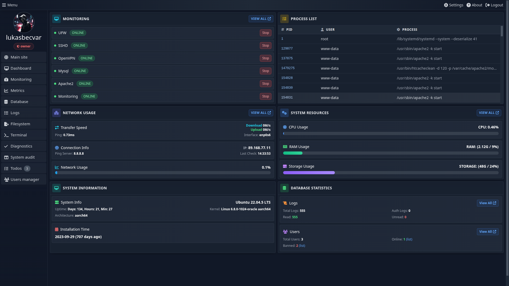
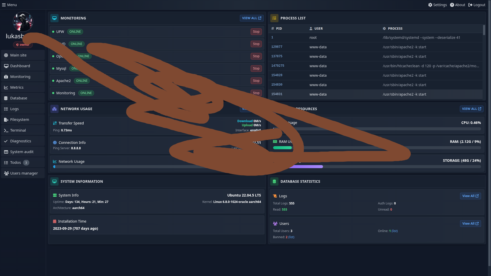

The Admin Suite is a comprehensive, yet remarkably simple and user-friendly solution meticulously
crafted for the efficient monitoring and management of Linux servers. It is primarily designed to
cater to the needs of single server instances, making it an ideal choice for small to medium-sized
deployments or dedicated server environments. While optimized for Debian-based systems, its core
functionalities are broadly applicable across various Linux distributions.
This suite empowers administrators with a centralized dashboard to oversee critical server
operations, track performance metrics, manage services, and ensure the overall health and stability
of their infrastructure. Its intuitive interface simplifies complex administrative tasks, making
server management accessible even to those with limited command-line experience, while still
providing powerful tools for seasoned professionals.
Open Source
Admin Suite is an open-source project, and its entire codebase is available on GitHub. We welcome
contributions from the community to help improve and expand its functionalities.
The Admin Suite is engineered with a robust and efficient tech stack, prioritizing performance,
stability, and ease of deployment. A key architectural decision was to design the application for
bare-metal deployment rather than as a containerized solution. This approach minimizes overhead,
provides direct access to server resources, and simplifies the operational footprint, making it
exceptionally straightforward to install and manage without the complexities often associated with
container orchestration.
At its core, the application leverages PHP 8+ (specifically Symfony, as identified from the GitHub
repository analysis) for its powerful backend logic and API functionalities. For data persistence,
the metrics component and other critical data are stored in a MySQL database, chosen for its
reliability, widespread adoption, and robust feature set. Furthermore, the application utilizes the
filesystem for caching mechanisms instead of external solutions like Redis, further reducing
external dependencies and simplifying the overall system architecture. This streamlined approach
ensures that Admin Suite remains lightweight, highly performant, and easy to maintain.
Requirements
To ensure optimal performance and compatibility, the Admin Suite requires the following software and
PHP extensions to be installed on your server environment:
Software
PHP: The core scripting language for the application's backend
logic. Ensure your PHP installation is up-to-date for security and performance benefits.
Compatible Web Server (Apache or Nginx recommended): A web server is necessary to serve
the application's files and handle incoming HTTP requests. Both Apache and Nginx are fully
supported and widely used.
MySQL Database Server (version 8.0 or higher): A robust relational database management
system used for storing application data, including monitoring metrics, user information, and
configuration settings.
Composer (Backend Package Manager): Essential for managing PHP dependencies and
autoloading classes. Composer simplifies the process of integrating third-party libraries.
NPM (Node Package Manager): Used for managing frontend dependencies and build processes,
such as compiling CSS and JavaScript assets.
PHP Extensions
The following PHP extensions are crucial for various functionalities within the Admin Suite:
PHP-PDO (PHP Data Objects): Provides a lightweight, consistent interface for accessing
databases, crucial for database interactions.
PHP-OpenSSL: Enables strong cryptography capabilities, vital for secure communication and
data encryption.
PHP-Intl (Internationalization Functions): Supports internationalized formatting, crucial
for handling diverse character sets and locales.
PHP-Curl (Client URL Library): Allows the application to make HTTP requests to external
services, used for various monitoring and integration features.
PHP-DOM (Document Object Model): Provides an API for working with XML and HTML documents,
used for parsing and manipulating web content.
PHP-GMP (GNU Multiple Precision): Offers functions for arbitrary-precision arithmetic,
potentially used in cryptographic operations or complex calculations.
PHP-GD (Graphics Draw): Enables image manipulation capabilities, which might be used for
generating charts or processing visual data within the application.
Installation
Installing the Admin Suite is designed to be a straightforward process, mirroring the simplicity of
deploying any standard PHP project. Follow these detailed steps to get your Admin Suite up and
running:
Download the Release archive: Fetch the latest admin-suite-<tag>.tar.gz
release assets on the GitHub Releases
page, upload it to your server, and extract it to the directory. If you prefer working
directly with the source, you can clone it via HTTPS instead:
Configure Web Server: Set up an Apache Virtual Host or Nginx server block to point to the
application's public/ directory. This configures your web server to serve the Admin
Suite application.
Create Environment File: Duplicate the .env.prod file to .env
in the root directory of the project. This file will contain your specific environment
configurations, such as database credentials and application settings. Customize it according to
your server environment.
Install Dependencies: Navigate to the project root in your terminal and install both
frontend and backend dependencies using the respective package managers:
npm install && composer install
This command will install all required Node.js packages for frontend assets and PHP packages
managed by Composer.
Build Frontend Assets: Compile the frontend assets (CSS, JavaScript) for production. This
step ensures that all styles and scripts are optimized and ready for deployment:
npm run build
Create Database: Create the necessary database for the Admin Suite. This command will
create the database if it doesn't already exist, based on your .env configuration:
Migrate Database: Apply all pending database migrations to set up the required tables and
schema. The --no-interaction flag ensures the process runs non-interactively:
Create Systemd Service for Monitoring: For continuous monitoring, it is crucial to set up
a systemd service that runs the monitoring console command in an infinite loop. Refer to the
systemd-config documentation within the repository for detailed instructions on
configuring this service.
Create Main Admin User: Establish the initial administrator account. You can do this
either via a console command or through the web interface. The web interface will automatically
allow user creation if the user table is empty, guiding you through the process.
Configure Custom Suite Settings: Optionally, create your custom suite configuration files
in the application's root directory. These files allow you to override default settings and
tailor the Admin Suite to your specific operational needs. Refer to the Configuration section for more details.
Configuration
The Admin Suite offers flexible configuration options, allowing you to tailor its behavior to your
specific environment and operational requirements. Configuration is primarily managed through
environment variables and dedicated suite configuration files.
Environment Variables
Environment variables are crucial for defining sensitive settings and environment-specific parameters
without hardcoding them into the application. These variables are loaded from the .env
file located in the root directory of your project. You should create this file and populate it with
your unique configurations, such as database connection strings, API keys, and other critical
settings. This approach ensures that sensitive information is kept separate from the codebase and
can be easily managed across different deployment environments (e.g., development, staging,
production).
Environment variables table
The environment variables are loaded from .env file. You can create .env file in root directory with your configuration.
Variable
Description
Example value
APP_ENV
Application environment
prod
APP_SECRET
Secret encryption key
0cb9325e8b4b59a90249865085
TRUSTED_HOSTS
Trusted url hosts
becvar.xyz,becvar.test
SSL_ONLY
Enable only ssl traffic
true
MAINTENANCE_MODE
Enable maintenance mode
true
PWA_APP_SUPPORT
Enable pwa app support
true
ADMIN_CONTACT
The system maintener contact email
admin@becvar.xyz
IP_APIS
The list of APIs to get host server pulic ip
IP_APIS=IP_APIS=https://ifconfig.me,url2,url2
IP_INFO_API
API for get information about visitor ip
http://ip-api.com
AUTHOR_WEBSITE_URL
The system maintener contact email
https://becvar.xyz
PROJECT_GITHUB_URL
The system maintener contact email
https://github.com/lukasbecvar/admin-suite
RATE_LIMIT_ENABLED
Enable rate limit
false
RATE_LIMIT_INTERVAL
Rate limit interval
60
RATE_LIMIT_LIMIT
Rate limit limit
100
ANTI_LOG_TOKEN
Token for disable logging
1234567890
SYSTEM_LOGS_DIR
System logs directory
/var/log
DATABASE_LOGGING
Enable database logging
true
LOG_LEVEL
Log level
4
MEMORY_COST
Hash memory cost
1024
TIME_COST
Hash time cost
10
THREADS
Hash threads
2
LIMIT_CONTENT_PER_PAGE
Limit items per page
10
MONITORING_INTERVAL
Monitoring interval
60
METRICS_SAVE_INTERVAL
Metrics save interval
60
NETWORK_SPEED_MAX
Network speed (Mbps) limit for usage calculation
1000
DATABASE_DRIVER
Database driver
pdo_mysql
DATABASE_HOST
Database host
localhost
DATABASE_PORT
Database port
3306
DATABASE_NAME
Database name
admin_suite
DATABASE_USERNAME
Database user
root
DATABASE_PASSWORD
Database password
root
MAILER_ENABLED
Enable mailer
true
MAILER_HOST
Mailer host
localhost
MAILER_PORT
Mailer port
25
MAILER_USERNAME
Mailer username
service@becvar.xyz
MAILER_PASSWORD
Mailer password
password
PUSH_NOTIFICATIONS_ENABLED
Enable push notifications
true
PUSH_NOTIFICATIONS_MAX_TTL
Push notifications max ttl
86400
PUSH_NOTIFICATIONS_CONTENT_ENCODING
Push notifications content encoding
aes-256-gcm
PUSH_NOTIFICATIONS_VAPID_PUBLIC_KEY
Public key for push notifications
12938747T6T6R236
PUSH_NOTIFICATIONS_VAPID_PRIVATE_KEY
Private key for push notifications
12938747T6T6R236
Suite Configuration Files
In addition to the environment variables, Admin Suite relies on JSON configuration files that
live in the config/suite directory. Each file governs a focused portion of the
system and can be overridden by copying it into the project root (for example
protected-columns.json) and editing the copy there. The application automatically
prefers the custom file while leaving the default variant untouched, which makes upgrades safe
and keeps your changes easily trackable.
Available suite configuration files:
protected-columns.json — Array of database column names that the Table Browser must hide
completely. Add fields that carry credentials (e.g., authentication_string,
auth_token) to keep them obscured from exports and screenshots.
blocked-usernames.json — Array of reserved usernames. During registration the backend
matches the chosen username against this list to prevent creation of accounts such as
root, administrator, etc. Extend it with any internal-only aliases.
feature-flags.json — Key/value map of booleans that toggle whole components. Each property
name matches a module (e.g., monitoring, terminal, database-manager);
set it to true to expose the component in the UI or false to hide it.
package-requirements.json — Defines what the diagnostic command checks for. It contains two
arrays:
php-extensions: Extension names such as pdo_mysql, gd
or intl.
system-packages: Binaries that should be present on the host (e.g.,
composer, ufw, git, zip). The Requirements
check command iterates over both arrays and reports missing dependencies.
services-monitoring.json — Master definition of every monitored service. It is a map where
each key is an internal identifier and the value describes the service:
service_name: Unique slug used in logs and API calls.
display_name: Human friendly label rendered on the dashboard.
type: Either systemd (checked via systemctl) or
http (polled via HTTP requests).
monitoring/display: Toggle whether the service is actively checked
and/or shown in the UI without deleting the definition.
config_files: List of files to expose in the detail drawer so operators can open
related configuration from the UI.
url (HTTP only): Endpoint to call; accept_codes holds the HTTP
status codes that count as healthy; max_response_time expresses the SLA in
milliseconds.
metrics_monitoring: Nested object with collect_metrics boolean and
metrics_collector_url string. When enabled, Admin Suite fetches custom metrics
from the provided URL.
exception_file: Absolute path to the log file that should be tailed inside the
monitoring UI (optional for purely systemd services).
terminal-aliases.json — Object where each key is the alias exposed in the in-browser
terminal and the value is the exact command executed (e.g., ll →
ls -alF -v). Updating this file lets you roll out helper shortcuts to all operators.
terminal-blocked-commands.json — Array of commands that the terminal will refuse to run.
Add resource-heavy or destructive binaries (bpytop, vim, etc.) to keep
the shared environment safe.
Any change to these files is picked up immediately; you only need to clear cache if you modify
them while running in production with long-lived opcache.
Authentication
The Admin Suite employs a meticulously designed, completely custom user authentication system, built
from the ground up to ensure robust security and seamless user management. This bespoke system
handles user registration, login, and permission management, providing a tailored experience that
integrates perfectly with the application's functionalities.
A unique aspect of the initial setup is that only the very first user attempting to register through
the application's web interface will be granted administrative privileges. This mechanism ensures a
secure initial deployment, preventing unauthorized access during the critical setup phase.
Subsequent user registrations can then be managed and assigned roles by the primary administrator.
For user sessions, the Admin Suite utilizes standard PHP sessions, ensuring secure and stateful
interactions. Additionally, a 'remember me' feature is implemented using secure cookies, allowing
users to maintain their login status across browser sessions for enhanced convenience, while
adhering to best practices for secure cookie handling.
Machine-to-machine integrations can reuse any user’s authentication token as an API key. Sending the
token in the API-KEY HTTP header automatically hydrates the session, so the request
inherits the same permissions as if the user had logged in via the UI. API access must be explicitly
allowed per user (the allow_api_access flag), and tokens can be rotated from the Users Manager
module. Every API-key authentication attempt is logged under the
api-authentication channel for auditing.
Security
The Admin Suite application is designed with a strong focus on security to protect sensitive data and
ensure system integrity. Key security features include:
High-Level Data Encryption: Sensitive data stored in the database is encrypted using AES
(Advanced Encryption Standard) to prevent unauthorized access.
XSS Protection: The application incorporates various protections against Cross-Site
Scripting (XSS) attacks, sanitizing user inputs and outputs to mitigate common web
vulnerabilities.
Production Environment Checks: Includes checks to prevent running in production
environments without SSL (Secure Sockets Layer) enabled, ensuring encrypted communication.
Robust Authentication: Utilizes a custom, secure user management system with strong
password handling and session management.
Monitoring
The Admin Suite provides a comprehensive and flexible monitoring system designed to keep you informed
about the health and performance of your server and its services. It encompasses various monitoring
facets, from service uptime to detailed system metrics and visitor tracking for web applications.
Services Monitoring
The core of the service monitoring functionality relies on a dedicated console command
(console app:monitoring:process) that runs continuously in an infinite loop. This
command actively checks the status of both HTTP-based services and systemd services. For robust
operation, this command should be configured to run as a persistent systemd service on your server.
Monitored services are meticulously defined within the
config/suite/services-monitoring.json configuration file, allowing for granular control
over what is monitored. To ensure timely alerts, it is essential to configure the monitoring
interval and specify an SMTP server or push notification settings via environment variables. The
real-time status and historical monitoring data for all configured services are then intuitively
displayed on the web dashboard page, providing a clear overview of your infrastructure's health.
Metrics Collection
The metrics component is an integral part of the monitoring process, designed to collect and store
vital performance data. Its operation is directly tied to the running monitoring process, ensuring
continuous data capture. This component diligently records average usage values for critical system
resources such as CPU, RAM, and storage, based on the interval defined in your .env
file (METRICS_SAVE_INTERVAL). This historical data is invaluable for analyzing
long-term performance trends, identifying bottlenecks, and planning resource allocation.
Metrics Collector for HTTP Services
For web applications, the Admin Suite offers a specialized Metric Collector, enabling you to gather
custom metrics directly from your monitored HTTP services. This feature allows for a deeper insight
into application-specific performance indicators. You can easily enable the metric collector within
the services-monitoring.json file by setting collect_metrics to
true and specifying the metrics_collector_url. The Metric Collector is
designed to accept simple key-value pairs (key as a string, value as an
integer or float), making it highly adaptable for various custom metrics.
This example demonstrates how your application can expose its internal metrics for collection by the
Admin Suite.
Visitor Tracking
The visitor tracking feature provides valuable insights into the usage of your HTTP-based services.
It allows you to monitor visitor activity, helping you understand user engagement and traffic
patterns. To activate this feature, you need to configure the specific service within the
services-monitoring.json file. It's crucial to specify both the service name and its
URL (the URL is used for verification against the HTTP_ORIGIN header).
Tracking is performed via a simple API call that needs to be integrated into your web application's
frontend. Below is an example of how to implement this API call using JavaScript:
This snippet demonstrates how your web application can send visitor data to the Admin Suite for
comprehensive tracking and analysis.
Notifications
The Admin Suite ensures that administrators are always informed about critical events and system
statuses through a robust notification system. This system is designed to deliver timely alerts,
allowing for proactive management and rapid response to potential issues.
Notifications are primarily delivered through two channels:
Web Push Notifications: For immediate, in-browser alerts, the application supports web
push notifications. Administrators can enable these directly within their user settings,
ensuring they receive real-time updates and critical alerts even when not actively browsing the
Admin Suite dashboard. This provides a seamless and persistent notification experience.
Email Alerts: In addition to web push, the system is capable of sending detailed alerts
directly to the administrator's email address. This serves as a reliable fallback and a
comprehensive record of significant events, such as service outages, critical system errors, or
security warnings. Email notifications can be configured to provide detailed context, helping
administrators quickly understand and address the reported issues.
The flexibility of these notification methods ensures that administrators can choose their preferred
way to stay updated, guaranteeing that no critical event goes unnoticed.
Logging
The Admin Suite incorporates a comprehensive logging system designed to provide deep insights into
both internal application activities and external events. This dual-purpose logging capability is
crucial for auditing, debugging, and maintaining a secure and transparent operational environment.
The system facilitates two primary types of log storage, both managed efficiently within the
database:
User Action Tracking: All significant actions performed by Admin Suite users are
meticulously recorded in the database. This includes login attempts, configuration changes,
command executions, and any other administrative operations. This detailed audit trail is
invaluable for security analysis, accountability, and understanding user behavior within the
application.
External Application Logs via API: The Admin Suite provides a dedicated API endpoint that
allows external applications to send their logs directly to the suite's centralized logging
system. This feature enables you to consolidate logs from various services and applications into
a single, easily searchable repository. By centralizing logs, administrators can gain a holistic
view of their entire ecosystem, simplifying troubleshooting, performance analysis, and security
incident response across their infrastructure.
External Log API
External services can push events to POST /api/external/log. The endpoint
accepts simple query parameters (name, message, level)
or an application/xml payload with the same fields. Each call must include a valid API-KEY header that belongs
to a user with API access enabled.
curl -X POST https://admin-suite/api/external/log \
-H "API-KEY: <user-token>" \
--data-urlencode "name=backup-service" \
--data-urlencode "message=Backup finished in 142s" \
--data-urlencode "level=4"
Successful return a JSON confirmation, while missing fields, malformed XML, or invalid
credentials generate descriptive error responses so callers can react immediately.
By storing logs directly in the database, the Admin Suite ensures data integrity, facilitates complex
querying, and provides a persistent record of all events, making it an indispensable tool for system
administrators.
System Preview
These frames are captured directly from a live Admin Suite environment, so every widget, badge, and
chart shown below reflects the production-ready state of the platform rather than mockups or drafts.
Treat this section as a quick visual audit of how the tooling behaves once it is deployed on real
environment.
aaaaa


The landing page concentrates key health indicators so operators can triage issues the second they log in.
Service tiles with inline controls reveal whether firewall, SSH, VPN, and other daemons are online.
Process list exposes active PIDs, owning users, and commands for rapid kill/inspect actions.